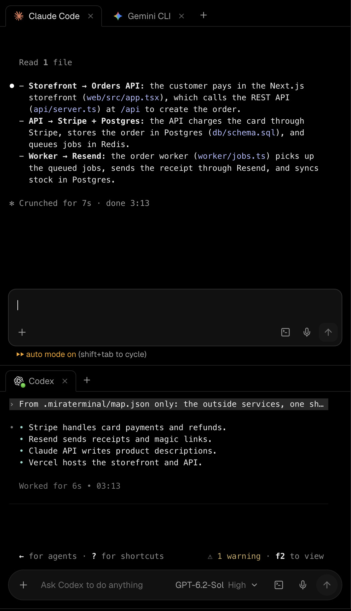
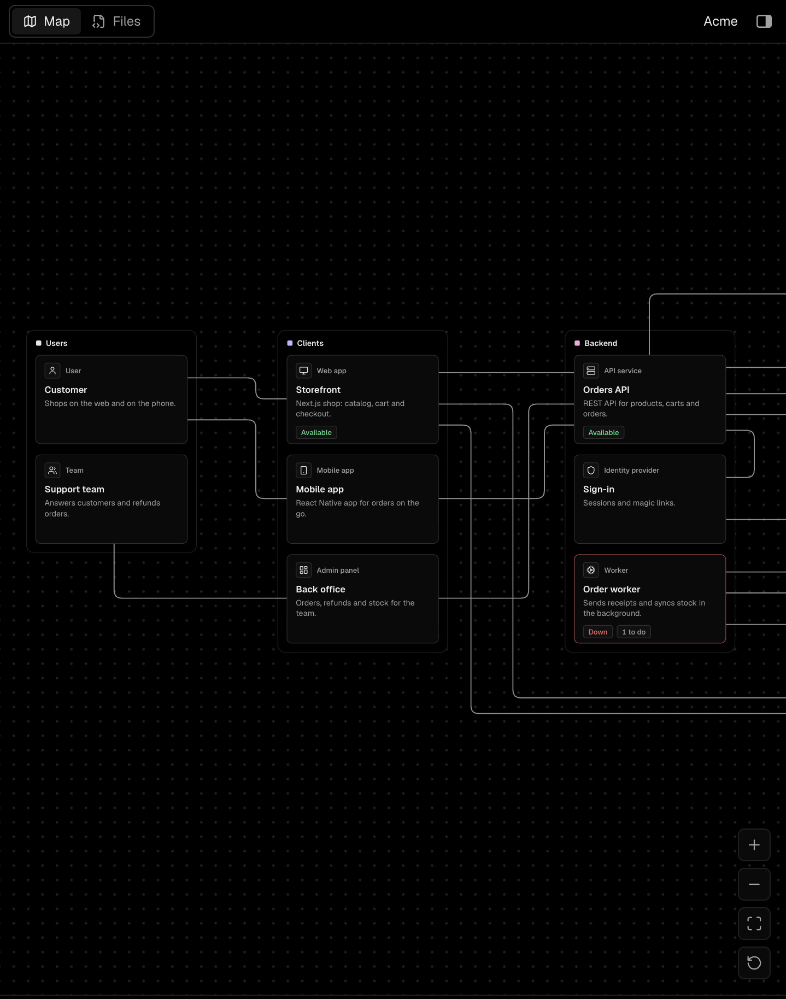
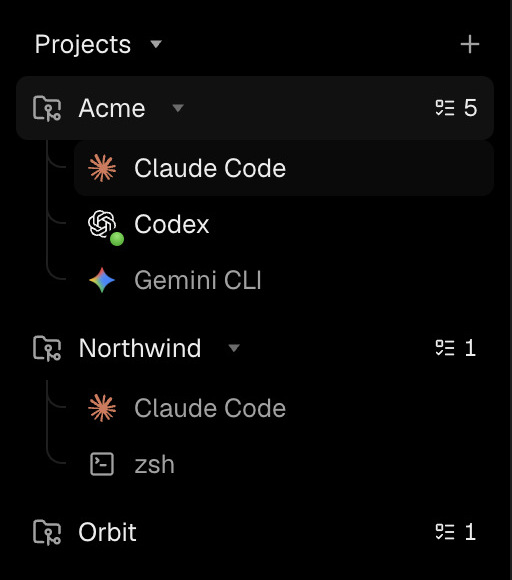
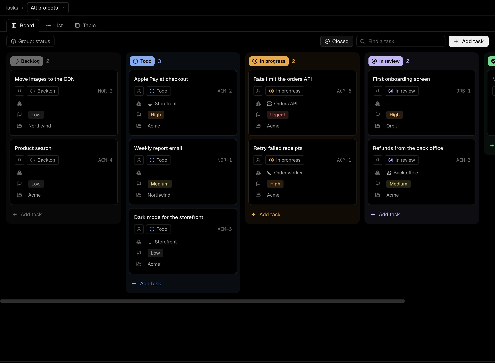
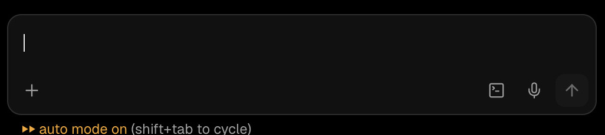
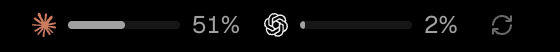
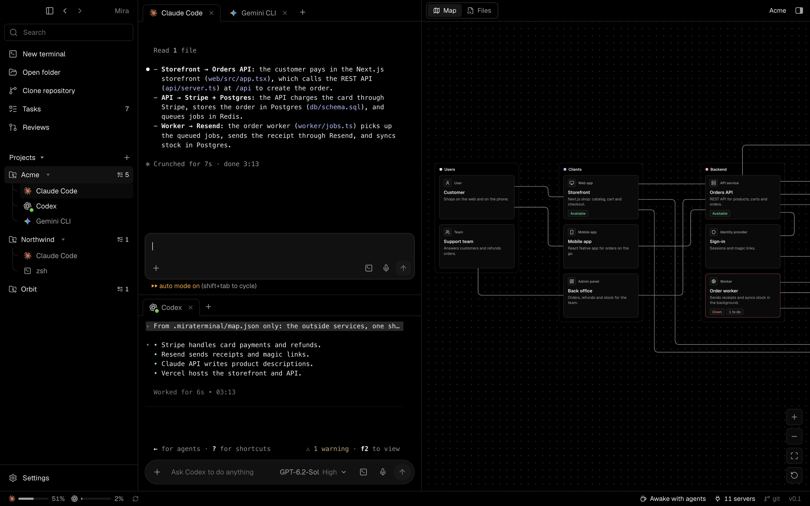
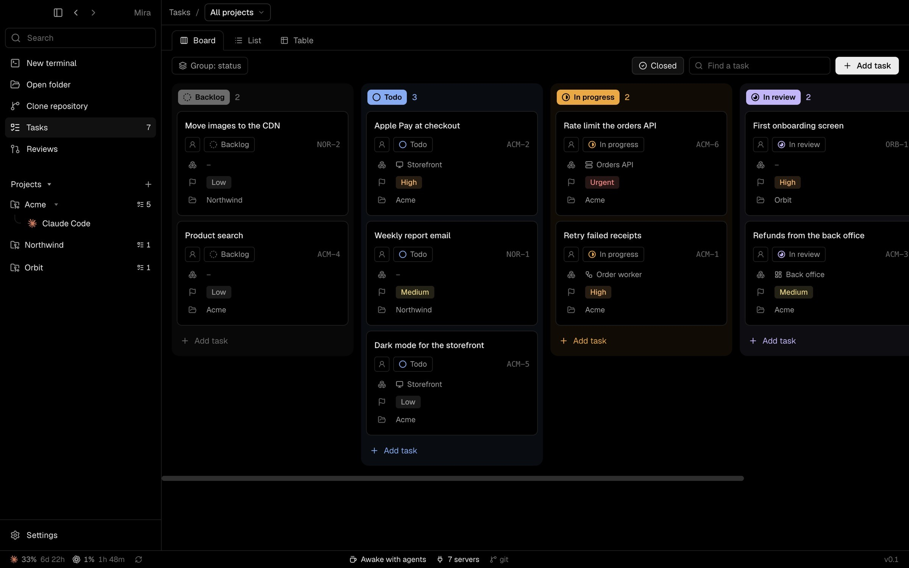

Every agent, side by side
Claude Code on top, Codex under it, Gemini in the next tab. Split the window the way the work needs.
Mira Terminal brings your coding agents, your projects and your tasks together. Here is all of it, part by part.

Claude Code on top, Codex under it, Gemini in the next tab. Split the window the way the work needs.

Mira reads the project and draws how it is built. Every link is proven by a line of the code.

Each project keeps its agents, its terminals and its tasks. Jump from one to the other in a click.

A board for every project. Give a task to an agent and start it from its card.

Files, screenshots and dictation go in like a paste. The keyboard never leaves the terminal.

How much of each account is used, right in the status bar.
Claude Code, Codex, Gemini, Cursor, Copilot and Grok run in the same window, each in its own tab. No more hunting through terminal windows to find which one is waiting for you.
Open any of them in a tab, split the window in panes, or open a second window for another project.
A tab shows when its agent is working, when it waits for your answer and when it is done. A sound or a notification can tell you too.
The bar at the bottom shows how much of your session and weekly limit is used, and when it resets.
Keep a work and a personal account for Claude and for Codex, and switch in one click.
Each agent uses its own default model, or the one you set for it in Mira. One model, never a mix.
Ask first, accept edits, plan only: set it once for all agents, or agent by agent.
Under each agent sits a message box shaped like that agent's own app. The keyboard stays in the terminal, so every command, shortcut and menu of the agent still works.
Drop a file, pick one, or take a screenshot: it lands in the agent's input as a path it can read.
Hold a key and speak. Your words are written into the input, and you check them before sending.
The box shows what the agent has in its own input, with its caret, its suggestions and its warnings.
Open a project and Mira draws its architecture: the apps, the services, the data stores, the outside systems and what moves between them.
Several readers go through the code at once. The diagram shows up in about a minute on a mid-size project.
Each link carries the file and the line that shows it. A link that cannot be found in the code is not drawn.
Click a block to open an agent already focused on that part: its files, its links and its open points.
Follow a sign-in or a payment across the diagram, one step at a time.
Blocks can show whether a service answers, a port is open or a variable is set, when you trust the project.
A flat diagram to read, or a scene to walk through. Both follow your theme.

A board, a list and a table for the tasks of all your projects. A task can be given to an agent and started in one click.
Six statuses with their colours, priorities, and a view grouped by status or by project.
Choose who does it. Start opens that agent in the project with the task as its brief.
Tasks live in a file of the project. No server, no account, and your team gets them with the code.

The tools you would otherwise keep open in five other windows.
The pull requests of every project in one list, with who wrote them and where they stand.
Projects, tabs, files, blocks of the diagram and actions, from one box.
Browse a project, open a file in an editor tab, keep notes in Markdown next to the code.
See which ports are open on your machine and which project started them.
Your Mac does not sleep while an agent is still working.
Colours, fonts and terminal settings: the whole app follows, the diagram too.
Mira runs on your machine. It has no server and no account, and it stores no key.
Your code goes to your agent, as it would in any terminal, and nowhere else.
Agents can be kept away from .env files, private keys and cloud credentials.
Removing files or resetting a repository asks you first, even when edits are accepted.
A project you just cloned cannot run its own checks until you say so.
Read the code, build it yourself, change what you want.
No plan and no trial. You only need the agents you already use.